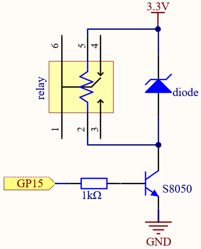
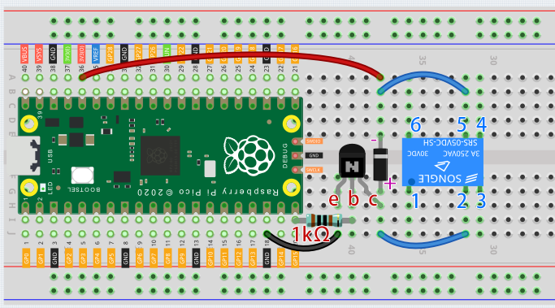
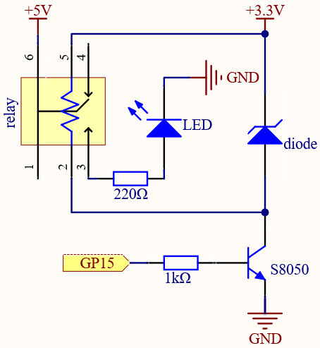

Note
Hello, welcome to the SunFounder Raspberry Pi & Arduino & ESP32 Enthusiasts Community on Facebook! Dive deeper into Raspberry Pi, Arduino, and ESP32 with fellow enthusiasts.
Why Join?
Expert Support: Solve post-sale issues and technical challenges with help from our community and team.
Learn & Share: Exchange tips and tutorials to enhance your skills.
Exclusive Previews: Get early access to new product announcements and sneak peeks.
Special Discounts: Enjoy exclusive discounts on our newest products.
Festive Promotions and Giveaways: Take part in giveaways and holiday promotions.
üëâ Ready to explore and create with us? Click [here] and join today!
2.16 - Control Another Circuit¶
In our daily life, we can press the switch to light up or turn off the lamp. But what if you want to control the lamp with Pico so that it can turn off automatically after ten minutes?
A relay can help you accomplish this idea.
A relay is actually a special kind of switch that is controlled by one side of the circuit (usually a low-voltage circuit) and used to control the other side of the circuit (usually a high-voltage circuit). This makes it practical to modify our home appliances to be controlled by a program, to become smart devices, or even to access the Internet.
Warning
Modification of electrical appliances comes with great danger, do not try it lightly, please do it under the guidance of professionals.
Here we only use a simple circuit powered by a breadboard power module as an example to show how to control it using relay.
Wiring
First, build a low-voltage circuit for controlling a relay. Driving the relay requires a high current, so a transistor is needed, and here we use the S8050.


A diode (continuity diode) is used here to protect the circuit. The cathode is the end with the silver ribbon connected to the power supply, and the anode is connected to the transistor.
When the voltage input changes from High (5V) to Low (0V), the transistor changes from saturation (amplification, saturation, and cutoff) to cutoff, and there is suddenly no way for current to flow through the coil.
At this point, if this freewheeling diode does not exist, the coil will produce a self-induced electric potential at both ends that is several times higher than the supply voltage, and this voltage plus the voltage from the transistor power supply is enough to burn it.
After adding the diode, the coil and the diode instantly form a new circuit powered by the energy stored in the coil to discharge, thus avoiding the excessive voltage will damage devices such as transistors on the circuit.
At this point the program is ready to run, and after running you will hear the “tik tok” sound, which is the sound of the contactor coil inside the relay sucking and breaking.
Then we connect the two ends of the load circuit to pins 3 and 6 of the relay respectively.
..(Take the simple circuit powered by the breadboard power module described in the previous article as an example.)

{kind=link}
At this point, the relay will be able to control the load circuit on and off.
Code
Note
You can open the file
2.16_relay.inounder the path ofeuler-kit/arduino/2.16_relay.Or copy this code into Arduino IDE.
Then select the Raspberry Pi Pico board and the correct port before clicking the Upload button.
When the code is run, the relay will switch the operating state of the controlled circuit every two seconds. You can manually comment out one of the lines to further clarify the correspondence between the relay circuit and the load circuit.
Learn More
Pin 3 of the relay is normally open and only turns on when the contactor coil is operating; pin 4 is normally closed and turns on when the contactor coil is energized. Pin 1 is connected to pin 6 and is the common terminal of the load circuit.
By switching one end of the load circuit from pin 3 to pin 4, you will be able to get exactly the opposite operating state.